coyote_mountain_topo · workflow lessons · worked example: Centro Equino, Chichihuas
From a place on the map to a finished site: a workflow lesson
The topo app turns any place on Earth into a drawing sheet and a model you can grade, study and build. This course walks one real project, Centro Equino, an equestrian center, from the empty hillside to a saved project file, a rendering gallery and a laser-cut model.
What the app is
One page, no install: coyotemountainfarm.com/topo.html. It fetches real ground (public elevation data and a satellite photo) for any place, then gives you four tasks down the left side. The course follows them top to bottom, with one exception: it reads the water in STUDY before shaping anything.
SITE: where you are and how much ground. SHAPE: pads, roads, ditches, hand sculpting, plants, objects. STUDY: water, sun, sections. MAKE: renderings, drawing sheets, 3D prints, laser layers, files.
How AI fits in
The whole drawing is data: a grid of heights plus a list of shapes and objects. So Claude can work on it two ways. You decide what happens; Claude does the measuring and the repeating.
Watching: in your ChromeClaude drives the open topo page while you watch it change. Best for layout and grading you want to react to live.
Heads-down: no browser neededClaude runs the same math on the project file with small scripts: batch renderings, drainage checks, print packs, laser sheets. You get pictures back.
You: the taste work
Say what the site is for
Mark intent with the red pen (SHAPE → sketch)
Hand-sculpt where feel matters
Pick from the proof sheet
Claude: the measurable work
Water analysis, cut and fill, grades
Turning red marks into exact roads and pads
Checking your sculpting still drains
Rendering batches, plan sheets, laser files
The one rule: every step ends in a picture you can react to, never a paragraph. That rule is what stops the conversation going in circles.
you mark intent→Claude builds it→shows a picture→you react or sculpt→Claude checks + saves
permaculture lensThe order isn't arbitrary. It follows the old scale of permanence: deal first with what is hardest to change (the landform and its water), then access and buildings, then plants. Each step carries one quiet note like this one.
Find the place, choose how much ground, turn the sheet, load the lot line, then lock it.
centre31.99987, −116.76412
site width400 m · 1,312 × 872 ft
rotation318°
lot (KML)9.59 ac · 3,092 ft
Why this step comes first: changing site width, rotation or detail later refetches the ground and wipes all grading (it also clears undo). Shapes and objects keep their places, but pads, roads and ditches have to be replayed. Get the frame right, then never touch it.
1a · Find itSITE → place
Type a place name or lat, lng into place or lat, lng and press fetch terrain. For a ranch with no address, drop a pin in Google Maps and paste its numbers.
Or use pick an area on a map to drag a box instead.
The status line tells you the source. Centro Equino: elevation tiles, 30 m or finer, heights 1,058 to 1,218 ft. (US sites get USGS 3DEP, far sharper.)
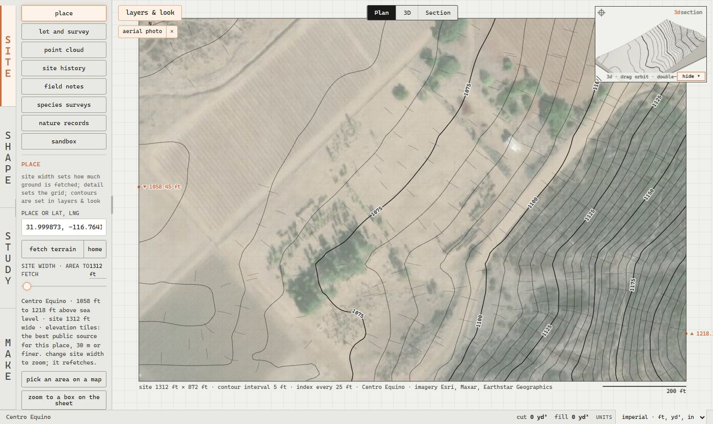
Fetched at 0°, north up. The hill is on the right and the contours run top to bottom, across what will be the working direction of the site.
say to Claude
Here's a Google Maps pin for the site: [paste link]. Fetch it in the topo app at a width that holds the whole property with some margin, and show me a screenshot.
1b · Size itSITE → site width
The sheet is always 3 wide by 2 tall. Width is set in metres: 400 m makes a 1,312 × 872 ft sheet.
Wider means coarser. The grid is 150 × 100 points, so each cell here is about 8.8 ft. detail 2× halves that but makes every redraw 4× the work.
Rule of thumb: the lot plus about 10% on every side for the working frame. The water above the lot is measured separately with a zoom-out in step 2, before any grading.
1c · Turn itSITE → site rotation
Turn the sheet so the site's long feature lies along it: the valley, the main road, the building's long axis. Centro Equino uses 318°, which lays the slope and the road left to right.
The north arrow on the sheet turns with it. Every export (KML, GeoTIFF) still lands at true coordinates.
The slider refetches on release. Try a few angles before any grading.
Turned to 318°: the contours now run along the sheet, the hill sits along the bottom, and the flat working ground fills the middle.
say to Claude
Try the site at three rotations that lay the main slope along the sheet, and show them side by side so I can pick one.
1d · Lot lineSITE → lot and survey → kml / kmz / geojson
Load the property line as a KML, KMZ or GeoJSON file. It pins to real coordinates, so it survives any later rotation. The terrain has to be fetched first.
Where the file comes from: a polygon drawn in Google Earth (right-click → save place as KMZ), the owner's survey, or a cadastral/RAN export. A KMZ can also carry an image overlay, like a scanned site plan, which gets pinned to its box.
Once loaded, the lot shows as a dashed line with its acreage. trim to lot cuts the 3D model, STL and laser layers to it while the plan keeps its context.
Centro Equino had no official file. Will drew the boundary by hand on 22 Sep. For this lesson Claude converted that 3,096 ft loop into projects/centro-equino-lot.kml and loaded it back in to prove the round trip: 3,092 ft, 9.59 acres.
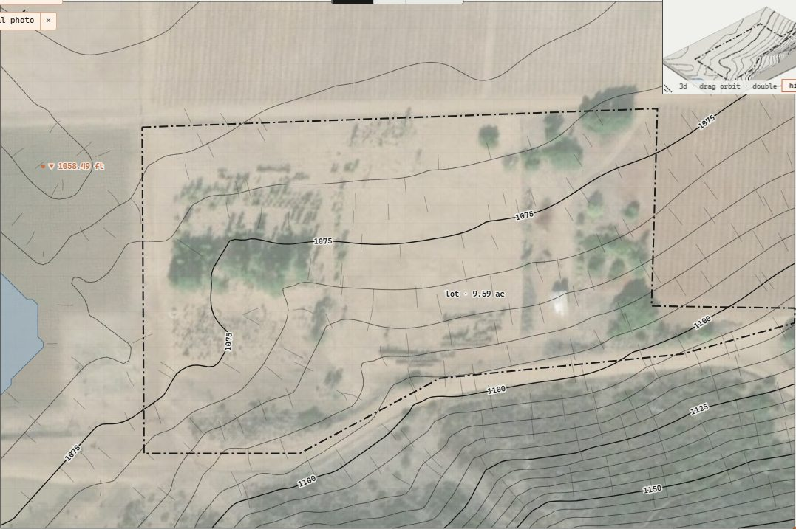
The KML loaded: lot · 9.59 ac. Look at the east corner, where the lot touches the edge of the sheet. See the checks below.
say to Claude
Here's the lot line [KMZ / survey PDF / photo of the plat]. Turn it into a KML, load it into the topo app, and tell me the acreage and perimeter so I can check them against the deed.
1e · Lock + saveproject → copy link, save
copy a link stores the place, width, rotation, units and lot line in a URL. Centro Equino's frame: coyotemountainfarm.com/topo.html?lat=31.999873&lon=-116.764125&w=400&rot=318&u=ft&name=Centro%20Equino
save downloads the project file (.json). The drawing lives in your browser; this file is the backup and the thing you hand to Claude or to the client.
Keep only one topo tab open. An old tab can save over the new drawing.
Check before moving onthe picture test
Photo and contours agree. Roads should sit in the draws they follow. check-road.html overlays the drawing on live imagery. The app shows Esri zoom 18. Zoom 19 sits about 13 ft off here, so fit things to the photo the app shows.
The lot sits inside the sheet with margin. Centro Equino's east corner touches the edge at 400 m. On a new site, go to about 450 m now. Here, grading already exists, so the frame stays.
The blue patch is real water or not. At the west edge the app has flagged flat low ground as water. Compare it with the photo; if it's dry, raw ground turns it off.
Know the ground's limits. 30 m public data has several feet of vertical error and can't see road cuts or terraces. Volumes are planning numbers, ±30–50%. A drone survey (SITE → lot and survey → drone survey DEM) is the real fix and can be loaded later without a refetch.
You finish withstep 1 outputs
Share linkplace + frame in one URL
Project filethe empty, framed site
Lot KMLboundary with acreage
3 picturesfetched · turned · with lot
permaculture lensObserve before you act. The frame is how you look at the land, so it should include the neighbours' hill, not just your fence line.
2
Read the water
Zoom out to find every acre that drains onto you, then zoom back in and trace where it goes.
watershed into the lot≈ 15.6 ac
seen at 400 m≈ 7.7 ac (half)
frame that holds it1,600 m
main exitwest fence
Zoom out first, before any drawing. The water on a site is set by the ground above it, and that is usually off the sheet. Widening the site later wipes grading, so do the watershed pass now while there is nothing to lose. Shapes and the KML lot line are pinned to real coordinates, so they come back with you.
2a · The trapSTUDY → water, at 400 m
At the working frame the catchments run off the sheet edges. Every number on them is cut short. On this sheet only about 7.7 acres of hill appear to drain onto the lot.
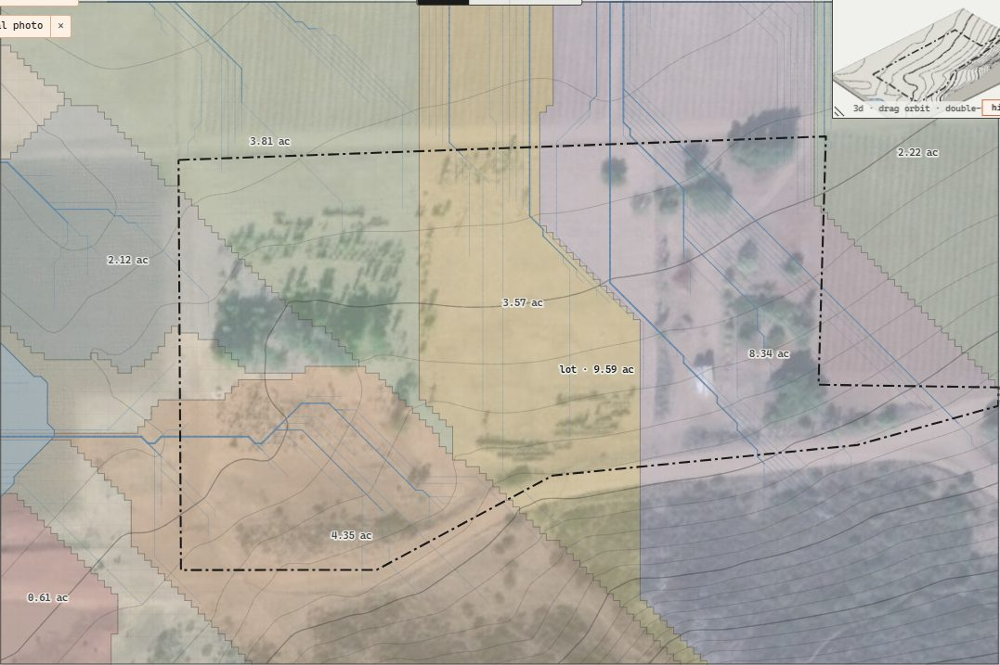
Flow lines and catchments at 400 m. The catchments touch the sheet edge, so their acreages are incomplete.
2b · Zoom outsite width → 1,600 m
Widen the site (the zoom-out button doubles it, or type a width) until no catchment that touches the lot runs off the sheet. Here 1,600 m was enough.
Read the big picture. The lot sits low in a ~262-acre catchment that drains west, with a steep scrub hill to the south-east.
Ask Claude for the one number that matters: how many acres drain into the lot line. Answer here: about 15.6 acres, all from that hill, starting roughly 1,300 ft upslope.
Trace that watershed as a shape (it stays pinned when you zoom back), then return to 400 m.
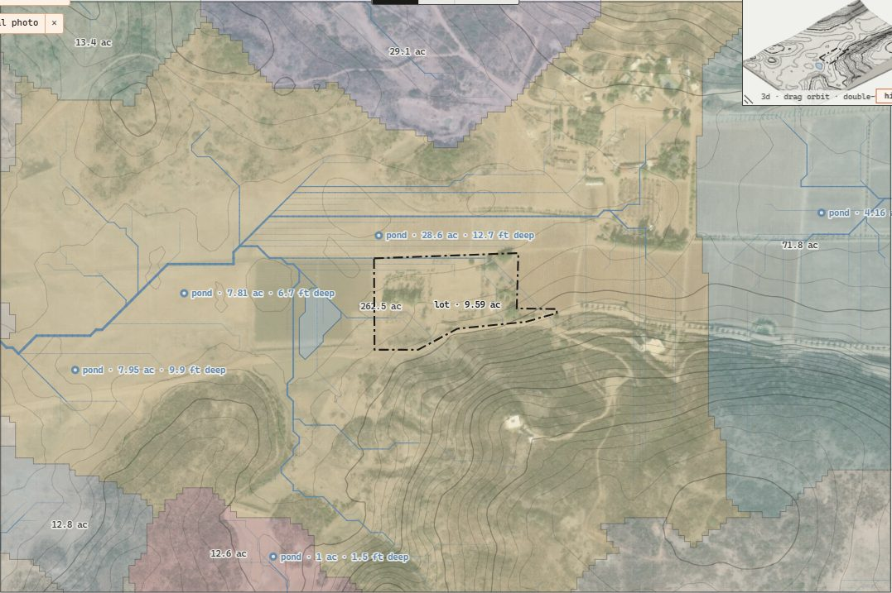
The same site at 1,600 m. Now every catchment around the lot is whole.
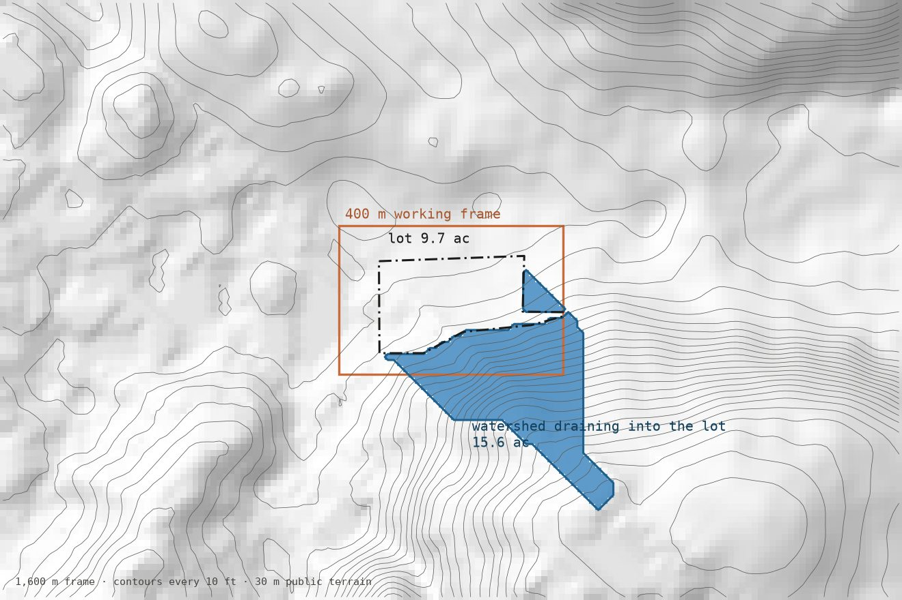
Claude's check: the watershed (blue) runs far outside the 400 m frame (orange). Computed from the app's own heights.
say to Claude
Before we design anything, zoom out until the whole watershed above my lot is on the sheet. Tell me how many acres drain into the lot line and where they enter, draw that watershed as a shape, then bring me back to the working frame.
2c · Trace itflow · catchments · rain
Back at 400 m, turn on flow and catchments only. Keypoints, keyline and dam site are for later. Press rain (r) and watch where the drops go and where they pool.
Centro Equino's reading: one flow matters. The hill's water crosses the road at the bend by the paddocks, runs through the track infield and leaves by the west fence. Everything in steps 3–6 was built around that line.
Claude writes it up as a one-page water plan. Centro Equino's is here, bilingual.
say to Claude
Run the water analysis on the natural ground. Show me flow and catchments only, then tell me in two sentences which flow matters most and where it crosses the lot.
permaculture lensWater comes right after landform on the scale of permanence. Catch it high, slow it, spread it, sink it. You can't do any of that until you know where it enters.
3
Program
What goes where, drawn roughly in red, before anything is exact.
3a · Loose linesSHAPE → sketch, red pen
For roads and paths, draw them loosely. Wobbly freehand is fine: follow the ground and the existing tracks in the photo, mark gates with a small circle, parking with small boxes, a fence with dashes.
Then say what each mark means: "red lines are 12 ft truck roads, this one is a 5 ft walking path, the dashes are a fence." Claude straightens and grades each one into a road that fits the ground.
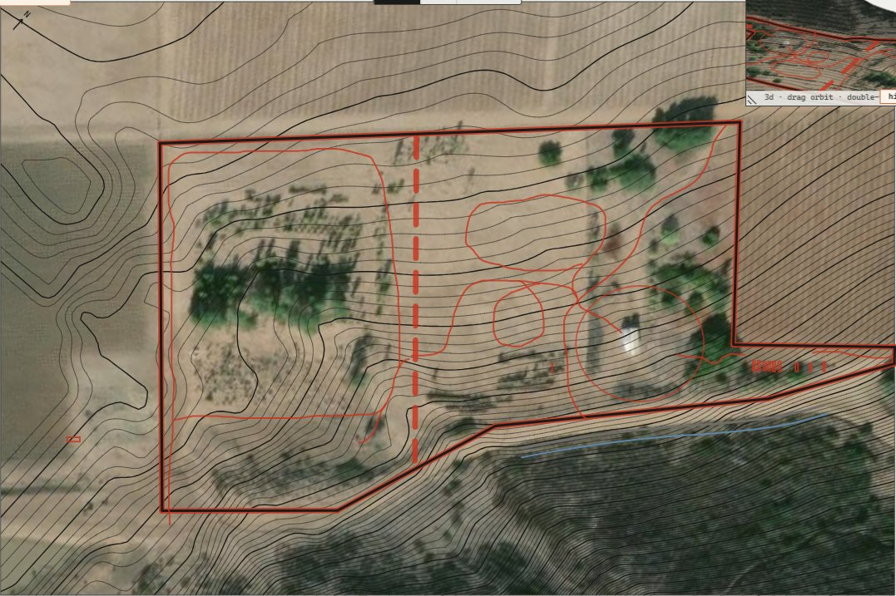
The actual red markup for the roads and paths (22–23 Sep), on the natural ground: loose freehand lines along the existing dirt tracks, the loops that became the ring roads around the arena and round pen, the road around the west field, small boxes for parking and a dashed cross fence. Rough on purpose.
say to Claude
Read my red lines. They're dirt roads and paths: make them 12 ft truck roads, except the one from parking to the barn, which is a 5 ft walking path. The dashed line is a fence. Tell me what you think each mark is before you build anything.
3b · Exact shapesask Claude for sizes
For anything with a real size, don't draw it; ask for it. An arena, a round pen, a riding track, a barn footprint, paddocks: name the type, the size and roughly where. Claude draws the exact geometry, and you move it if it's wrong.
This is where AI saves the most time. A stadium-shaped arena with 39 ft ends, or a 1,200 ft track with 60 ft corner radii, is tedious to draw by hand and one sentence to ask for.
what you asked for
what Claude drew
an oval arena
182 × 78 ft stadium, 39 ft ends
a round pen
60 ft circle
a riding track around the outside
12 ft wide loop, 60 ft corner radii, about 1,200 ft
the barn
72 × 40 ft footprint, turned to the slope
outdoor paddocks
4 paddocks, 67.5 × 75 ft each
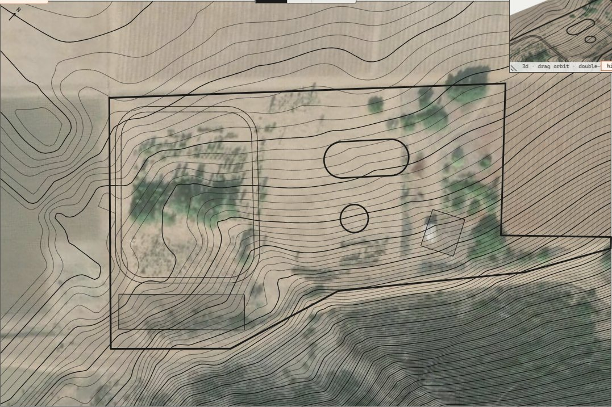
The same site with the exact shapes Claude drew on request: the track loop, the stadium arena, the 60 ft round pen, the barn footprint and the paddock block. Still on natural ground: nothing is graded yet.
say to Claude
Draw an oval arena 182 × 78 ft with rounded ends, centred where my red loop is. Add a 60 ft round pen south of it, and a 12 ft riding track around the west field with 60 ft corner radii. Give me the lengths and areas, and show me the plan.
The measure tool (SHAPE → measure) and typed sizes on the line, rectangle and circle tools do the same by hand if you prefer.
permaculture lensZones by how often you visit. The barn, trough and parking are daily, so they sit close together. Paddocks and track are regular. The scrub hill is left wild, and it is also the watershed.
4
Place
Turn the marks into real objects and roads, still on natural ground.
4a · Build the markspath · object · select
Claude turns red lines into path strokes: 12 ft truck roads, a 5 ft walking path, the riding track.
Buildings and fences come in as objects (OBJ files Claude generates from dimensions): the barn, four paddocks with shade stalls, and fences that follow the ground with gate openings.
Nothing is graded yet. Cut and fill still read 0. You can move things freely with select: drag, turn, [] to scale.
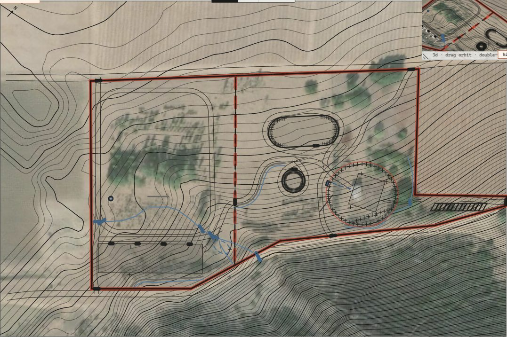
Everything placed, nothing graded. The bottom bar still reads cut 0 / fill 0. This is the cheapest moment to move things.
say to Claude
Build my marks: roads as 12 ft paths, the barn as an object at its real size, fences draped on the ground with gates where I drew circles. Don't grade anything yet. Show me the plan.
One topo tab only, and save before big changes. At Centro Equino an undo silently removed the site fence and the paddocks mid-session. Ask Claude to list what's in the drawing before it assumes something is there.
permaculture lensStack functions. The barn roof is also a water catchment: about 2,000 gallons per inch of rain, piped to the stone trough beside it.
5
Grade
Claude roughs in the pads and roads to numbers; you sculpt the places that need a hand.
5a · Rough inpad · path · ditch and berm
Claude grades in a fixed order so the pads stay flat. Replay order: reset → roads → pads → ditches → trough apron. Each pad is balanced (cut ≈ fill) with soft edges.
pad
level
fall
barn + runs
1,087.6 ft
1%
paddocks
1,082.5 ft
1%
round pen
1,080.6 ft
1%
arena
1,073.3 ft
1%
parking
1,102.4 ft
follows ground
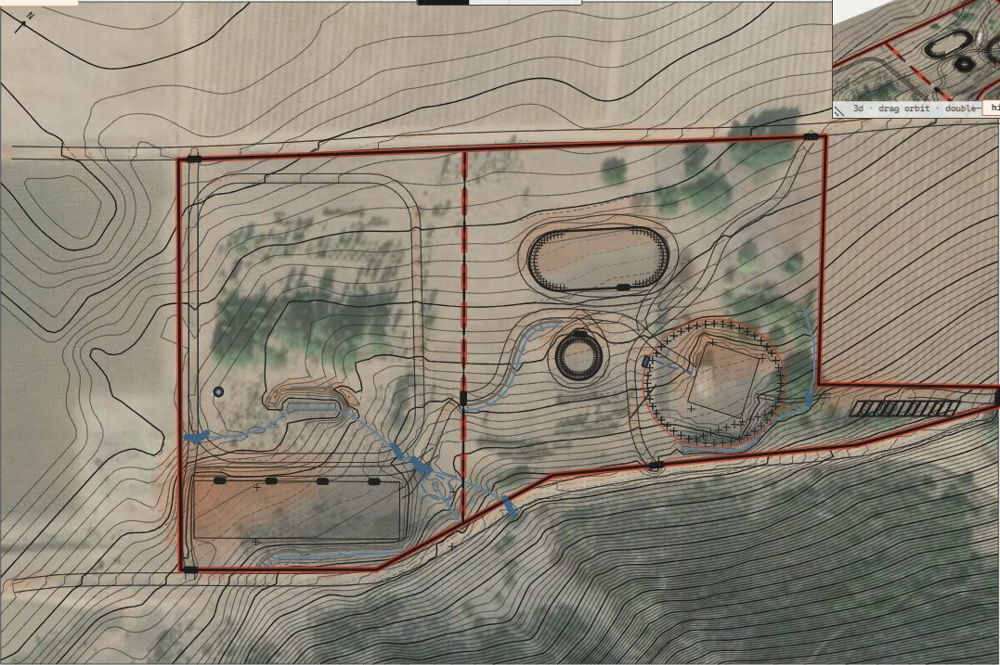
Graded plan. Ember wash is fill, grey is cut. Bottom bar: cut 4,800 yd³ / fill 4,600 yd³.
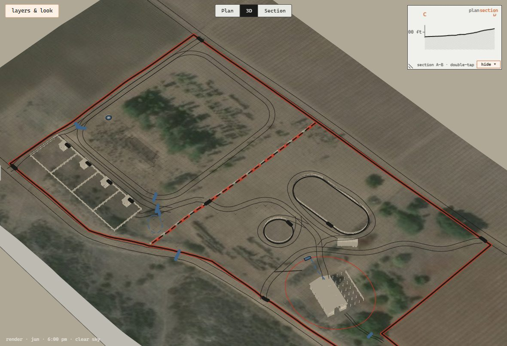
The same design in 3D. Orbit it and ask "does this feel right?", not "are the numbers right?"
5b · You sculptSHAPE → sculpt
Raise, lower, smooth, flatten with a brush, in plan or 3D. This is the part that should feel like clay: berms that curve, a softer bank, a mound for shade trees.
Then hand it back: "check my sculpting." Claude re-measures cut and fill, re-runs the water (step 6), and snapshots before touching anything.
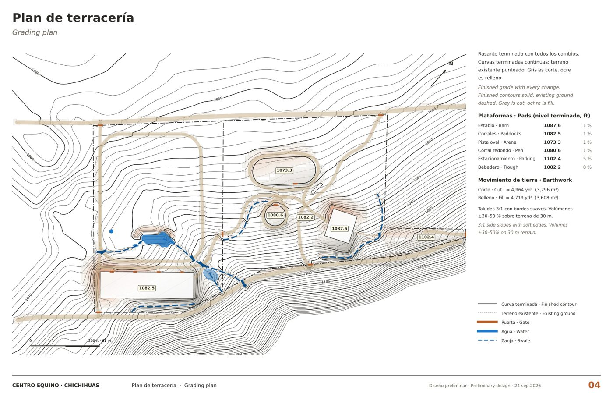
What grading becomes on paper: pack page 4, the bilingual grading plan.
say to Claude
Grade the pads balanced with soft edges, then the roads with a 2.5% cap on the track. Give me cut and fill per pad and a 3D view. After that I'll sculpt; then check that my sculpting still drains.
Volumes are ±30–50% on 30 m public terrain. Good for planning and balance; not for a contractor's bid. A drone survey fixes it, and the pads can be re-cut in minutes on the new ground. estimate
permaculture lensLeast change for the most effect. A balanced cut and fill keeps every yard of soil on site, with nothing trucked in or out.
6
Water again
The step people skip. Run step 2 again on the finished ground.
6a · Re-readSTUDY → water, graded
Pads and roads change where water goes. Re-run flow and catchments on the graded ground and compare with step 2.
Every place a road crosses a flow gets a culvert (7 at Centro Equino). Every ditch needs a safe outlet: an open item on 9/22 was a swale that dumped everything at one point and would cut a gully.
Centro Equino's answer: a grassed waterway in two legs, an infield basin, a barn diversion, and a natural water sink at the track's south-east end instead of a dug pond.
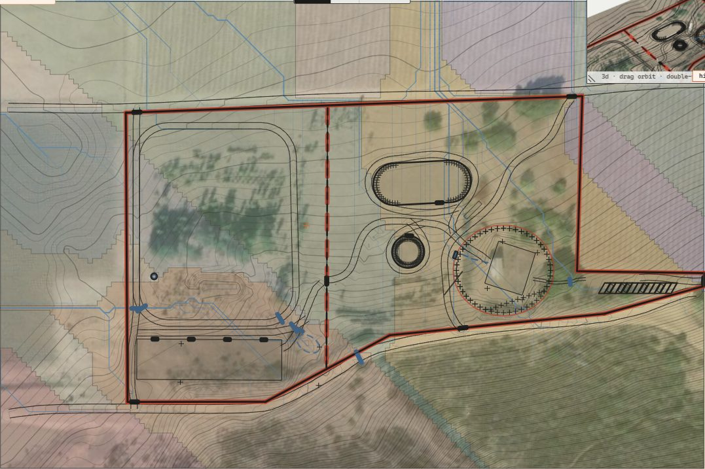
The app's water analysis on the graded ground, with culvert marks at the crossings.
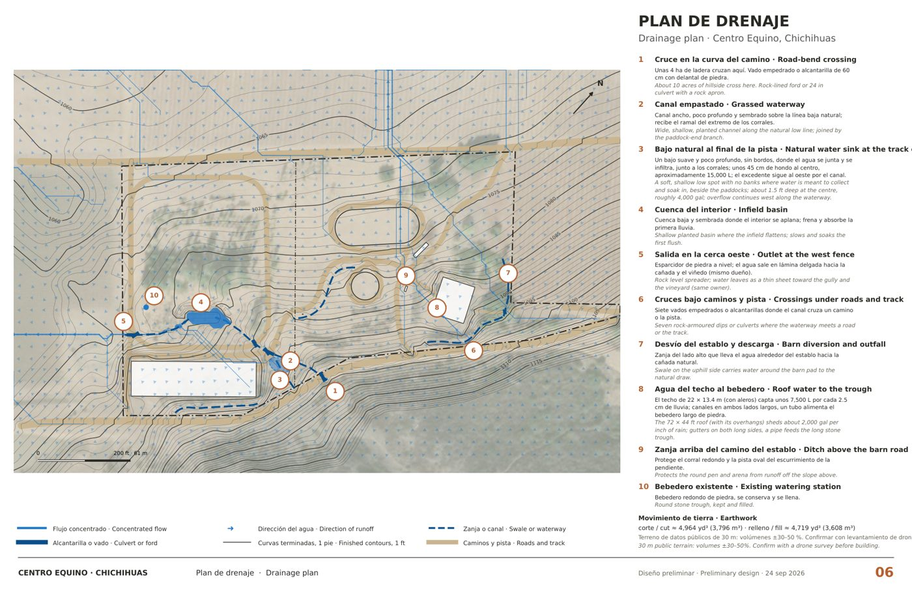
Drainage plan D-1 (pack page 6): flow arrows, the waterway, basin and culverts, with numbered notes.
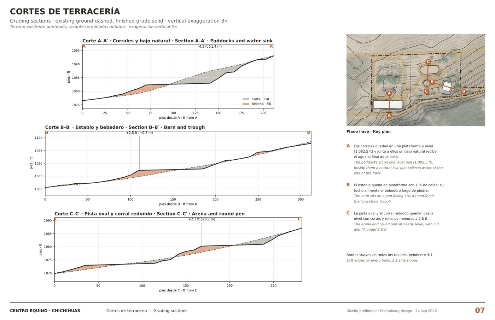
Sections through the heaviest grading (pack page 7): existing ground dashed, finished grade solid.
say to Claude
Re-run the water on the graded design and compare it with the natural ground. Show me every place a road crosses a flow and every ditch outlet, and tell me which one would erode first.
permaculture lensThe problem is the solution. The low corner where water gathers became the water sink the design is built around.
7
Plant + proof
Put plants where the water now goes, then paint the design from every angle.
7a · PlantSHAPE → plant · agroforestry · STUDY → what grows where
Plants follow the water from step 6: trees along the waterway and below the sink, shade trees beside the paddocks, hedges on the fence line against the wind.
what grows where reads each plant in the library against slope, sun side, wetness and frost pockets. agroforestry grows the rows with a year slider.
Honest gap in the example: Centro Equino has not been planted yet. Traced vineyard rows were tried and rejected twice. This sub-step is the one to do next on the real project. not done
7b · Proof sheetMAKE → paint · check the painting
Claude sets up a batch: top, 3/4, eye level, low golden hour, green season, and the white site model, with different painters and reference images. About 45 paintings came out of Centro Equino, and every one was kept, good and bad.
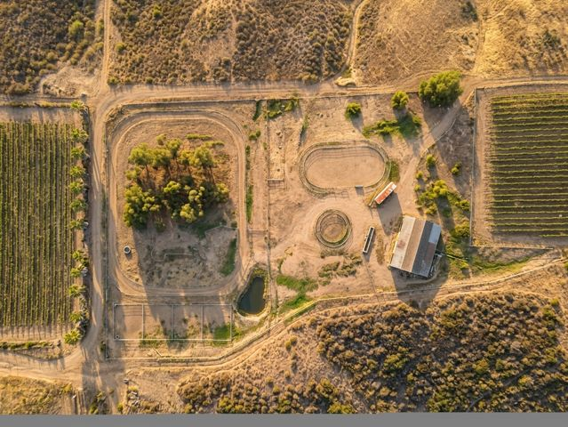
top · golden
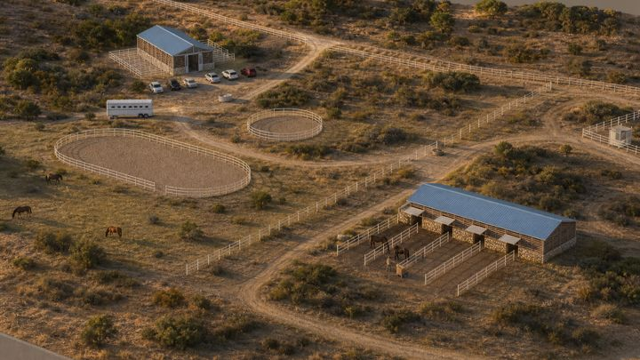
3/4 · barn
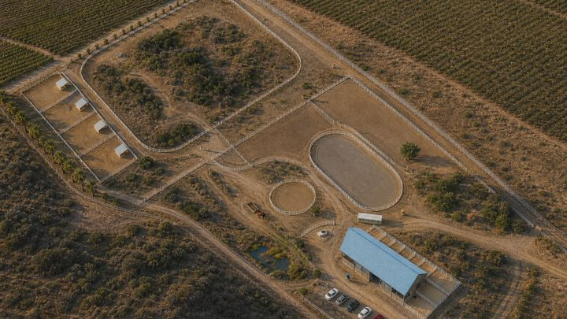
oblique
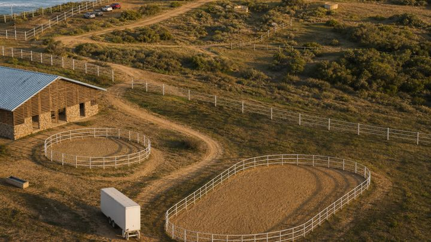
close · arena
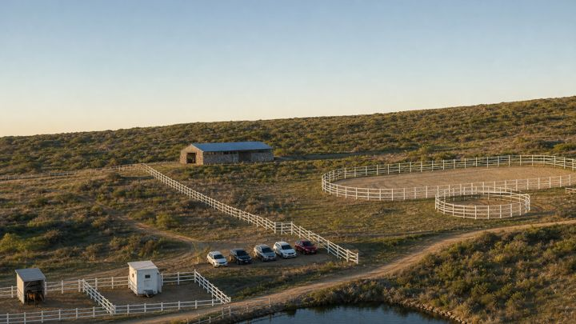
eye level
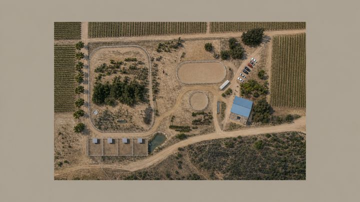
plan · painted
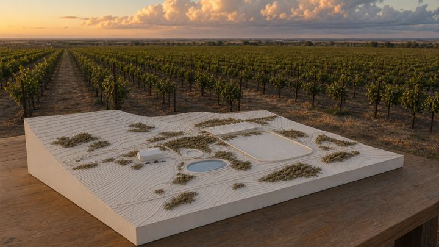
white model · vineyard
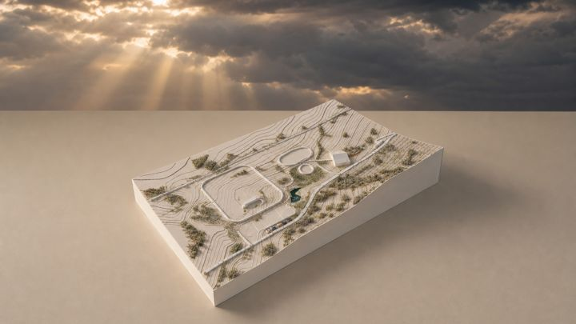
white model · storm
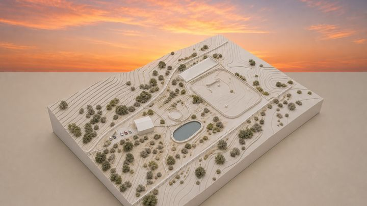
white model · dusk
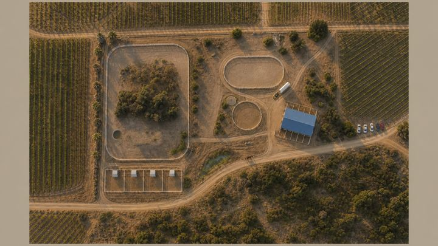
top · late
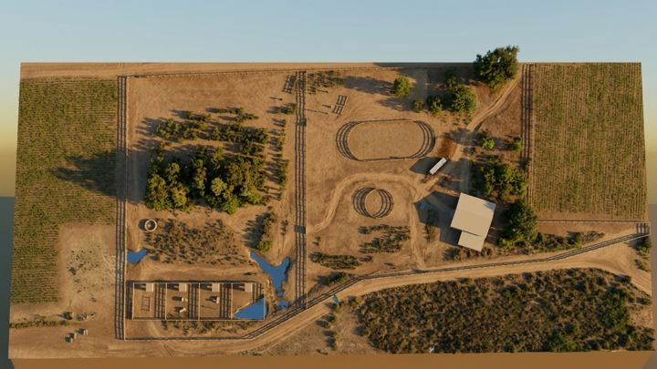
top · green
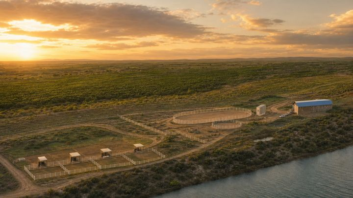
drift: invented a river
Outlined: the painter read the grey model edge as water and invented a river. check the painting compares each painting with the model and lists what drifted, so you can paint again with fixes.
What worked: gpt-image-2 holds the layout better than Gemini. A top-view barn reference image tagged "the building" stops the barn coming out wrong. Frame out the model edge. Low camera angles make the sky read as real.
Masked edit fixes one spot without repainting the whole picture.
say to Claude
Paint a proof sheet: top, 3/4, eye level and white site model, at midday, golden hour and green season, with the barn reference image. Check each painting against the model, keep every one, and give me a gallery so I can pick.
permaculture lensPlants go in last because they are the easiest thing to change. They are also what the place will be remembered for, so the proof sheet shows seasons, not just one day.
8
Make
The finished products: pick one or all three.
8a · Project fileproject → save
The .json holds the ground, the grading, every shape and object. It's what you hand to the client, reopen next season, or give Claude for any script. Centro Equino: centro-equino-final-2026-09-24.json. Load it in the app with project → open.
8b · Plan sheetsbilingual 11 × 17 pack
Claude builds the print pack from the project file with scripts: cover, plan, existing topo, grading plan, an operator's stake sheet, drainage, sections, views, stable plans and structure. 18 pages, Spanish first, English italic.
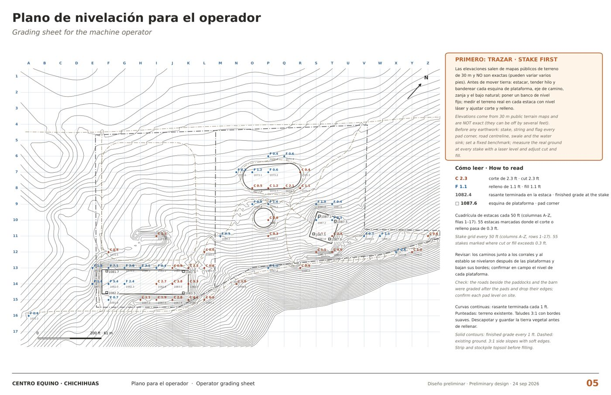
Page 5, for the machine operator: a 50 ft A–Z / 1–17 stake grid with cut or fill at every stake.
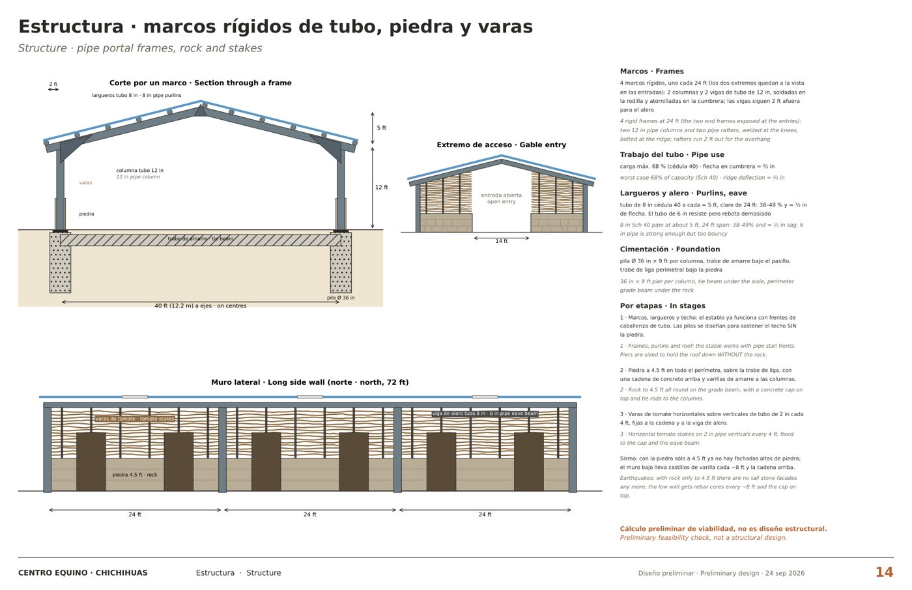
Page 14: the stable's pipe portal frames. Feasibility only; a Mexican structural engineer signs off.
say to Claude
Build the print pack from the final project file: 11 × 17, bilingual, with grading, drainage, sections, an operator stake sheet and the best renderings. Share it as a Drive link; it's too big to email.
8c · Laser modelMAKE → laser-cut model
The graded ground as stacked board. Centro Equino: 49 layers of 1/8 in board, 1 in = 40 ft, 5× vertical, about 28 × 15 × 6 in, on 19 sheets of 32 × 18 in. Red cuts, blue scores the next layer's glue line and the design, green scores the stake grid, and each layer is labelled with its elevation.
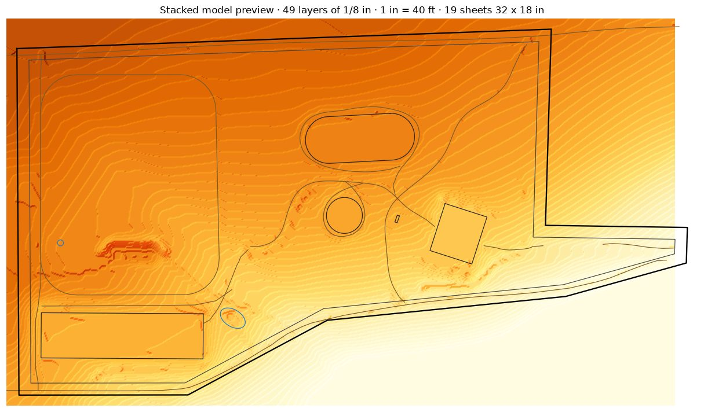
Preview of the stack before cutting: each band is one 1/8 in layer.
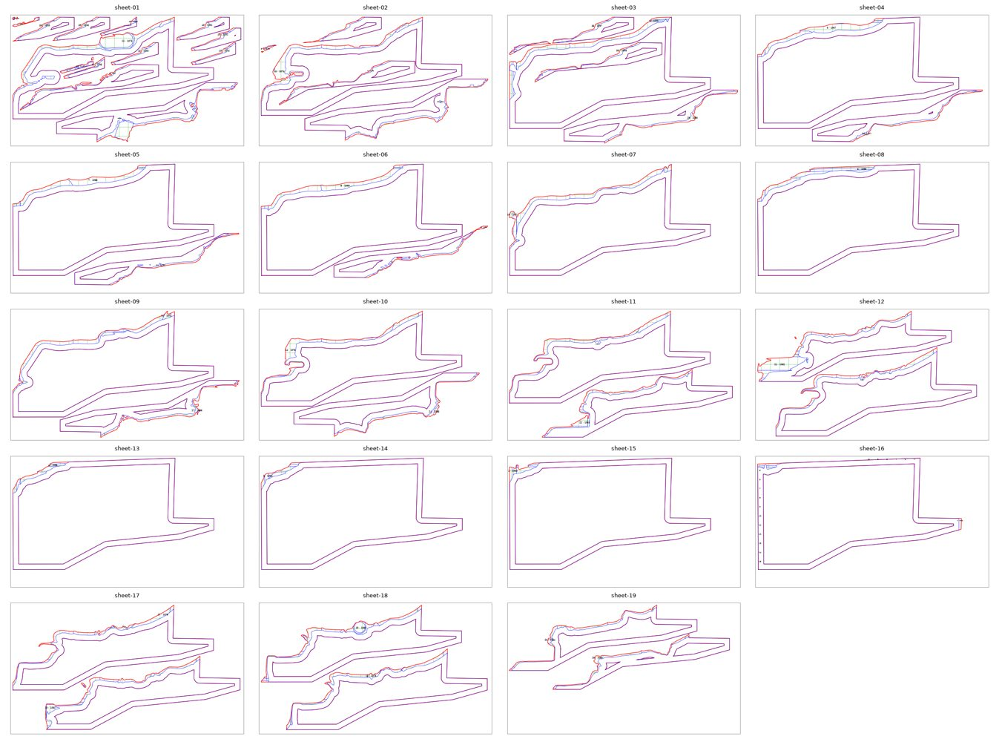
The cut sheets. Hollow rings with glue lips save board; most sheets are edge frames.
say to Claude
Make the laser-cut site model from the final grading: 1/8 in board, fenced site plus 20 ft, 1 in = 40 ft, hollow layers, with the pads and roads scored. Show me the stacked preview before I cut.
You finish withthe whole course
Project fileground, grading, every object
Water planwatershed, flows, outlets
Proof sheetrenderings, good and bad
Pack + modelsheets to build from, board to cut
permaculture lensProduce no waste. Keep every rendering and every version of the file. The rejected vineyard rows are still saved in case they come back.
Measured vs estimated.measured site frame, lot acreage, pad levels, road lines fitted to the app's own photo. estimate the watershed acreage, cut and fill, storm flows: all on 30 m public terrain, ±30–50%. A drone survey (SITE → lot and survey) upgrades every number without redrawing.